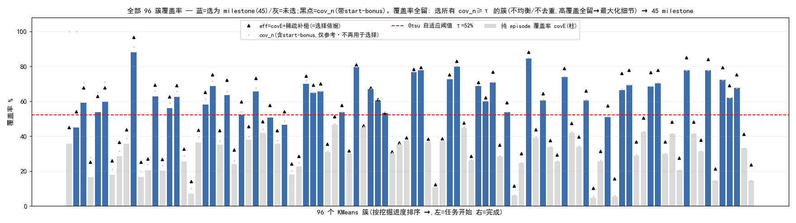
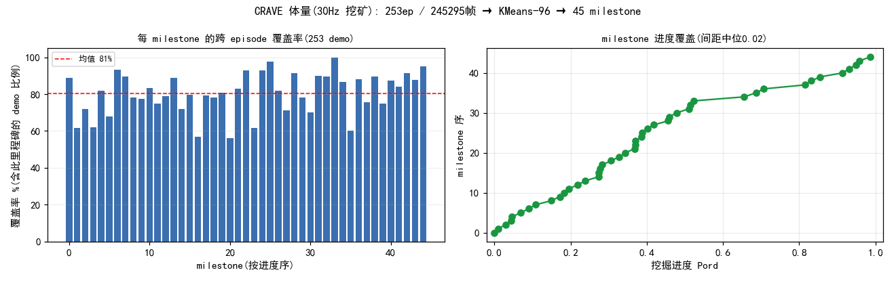
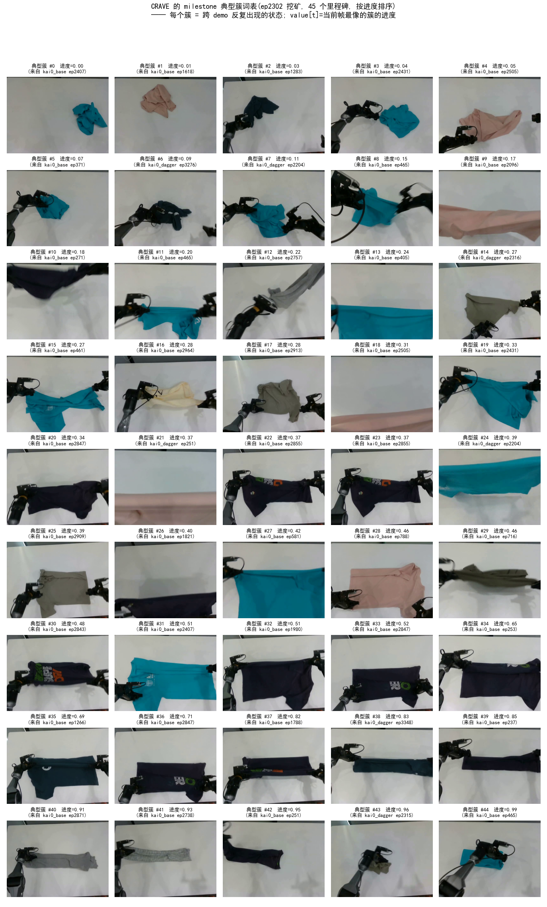
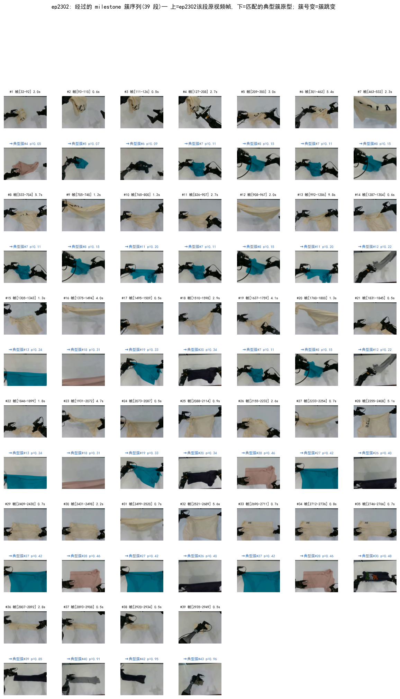
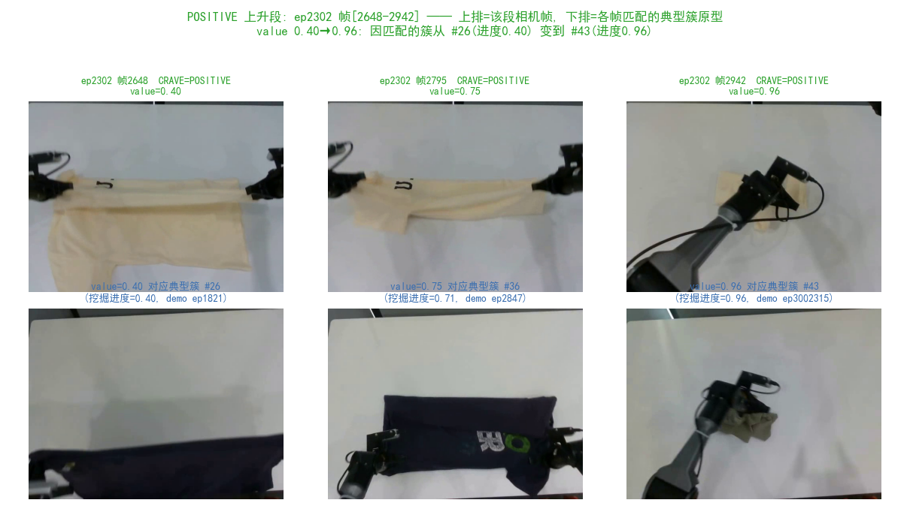
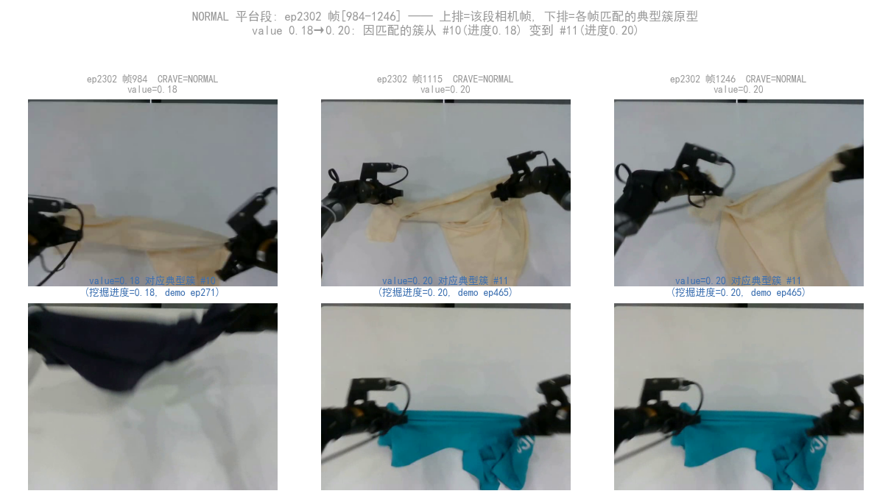
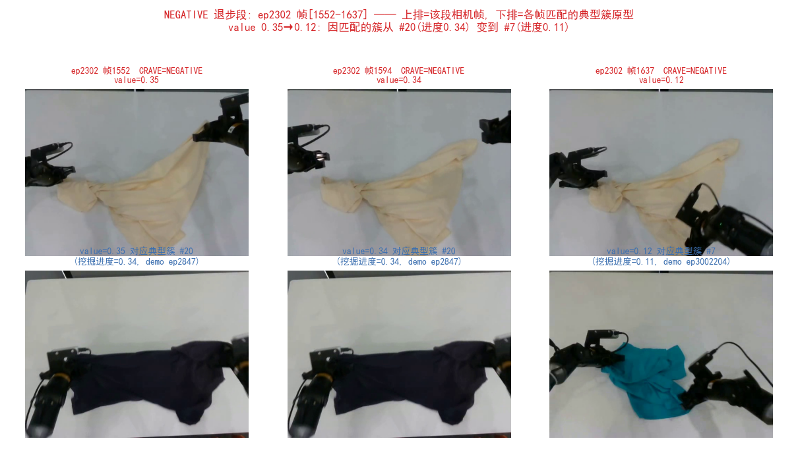
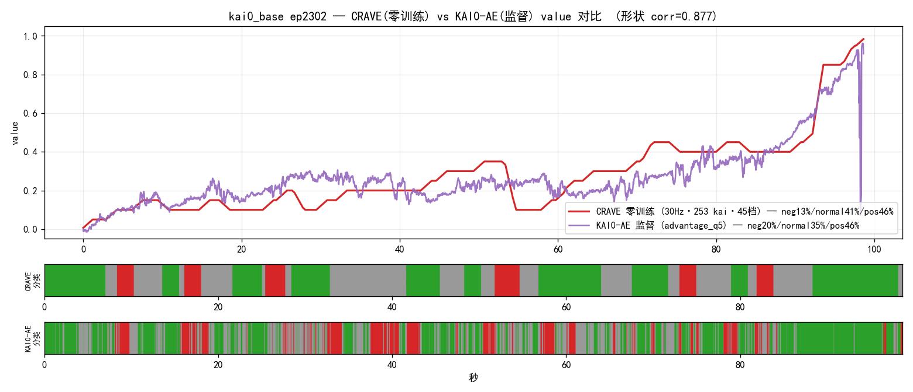

§摘要
CRAVE(Cross-episode Recurrence as Value Estimation)是一套全程零训练的稠密 value/进度估计方法:把同任务多条 demo 里反复出现的状态视为任务必经 milestone,用 frozen DINOv2-small 特征 + KMeans + Viterbi-DP 把"跨 episode 统计重复性"读出为单调 progress value——无需任何梯度更新或人工 stage 标注。
本报告在真实 kai0 数据上验证:从 kai0_base + kai0_dagger 抽 253 条 demo、按 30Hz 逐帧提特征做纯 kai 挖矿,对最长 episode ep2302 做四层可解释性剖析(典型簇词表 → 簇-帧对应 → 三段拆分 → 与监督 KAI0-AE 对齐对比)。核心结论:零训练 CRAVE 在 in-distribution kai0_base 上 ≈ 监督 KAI0-AE(pos 同为 46%、value 形状 corr 0.877),且显著更平滑、可解释。
1方法与实现步骤(从零讲清楚)
一句话直觉:同一个任务,人/机器人做很多遍,中间会反复经过一些"必经状态"(比如"对折好左半边")。把这些"很多条录像里都出现的状态"找出来当作里程碑(milestone),按它们在任务里的先后排好;再看一段新录像每一帧"最像哪个里程碑",就知道它做到几成了。整个过程不训练任何模型。
下面是从原始叠衣录像到每帧进度 value 的完整 7 步流水线。每步给出:做什么 / 为什么 / 怎么实现(对应代码)。
逐帧提特征(三路,frozen DINOv2-small,零训练)
- raw 路(384):所有 patch 向量取均值 + L2 归一 → "整幅画面长什么样";
- armmask 路(384):先把机械臂的 patch 剔掉(臂原型余弦相似 >0.6、或橙色线缆 HSV 命中),只留布料/桌面 patch 再取均值 → "去掉臂噪声后的布料状态";
- proprio 路(28):机器人 14 维关节 state ⊕ 隔 dt 帧的变化量 Δstate,做 z-score 归一 → "机械臂构型"。
crave_extract_kai_30hz.py(批量提特征,双卡分片) / crave_value.py 的 FeatureSpace.emb()。产物 = 每条 ep 一个 npz(raw/armmask/state)。跨 episode 聚类,找"反复出现的状态"
给每个簇算两个属性:进度位置 + 覆盖率
- 进度位置 tpos = 簇内帧的平均归一化时间(0=任务开始,1=结束)→ 这个状态大概在任务的哪个阶段;
- 覆盖率 covE = 含此簇的 demo 条数 ÷ 总条数 → 这个状态有多"普遍"(多少条录像都经过它)。
从 96 簇里选出 milestone(真正的"任务必经点")
把每个 milestone 钉到一个进度数值
对一段新录像算每帧 value(Viterbi-DP 读出)
value[t]∈[0,1] = 任务完成了百分之几。全程零训练、零标注。crave_value.py 的 DiscreteValue.value() / 本报告用 crave_interp_clusters_ep808.py。频率相关窗参随帧率标定(30Hz:dt=10 lam=80 medw=45)。从 value 派生 advantage / 三档
advantage[t] = clip(value[t+50] − value[t], −1, 1)(未来约 1.7s 的进度增量),再离散成三档:pos 推进 / normal 保持 / neg 退步。2实验设置:纯 kai · 30Hz 挖矿
为保证"只用 kai 数据",挖矿集逐值核验自 kai0_base / kai0_dagger(state 与原数据集逐值一致,0 个非 kai 混入)。特征按 30Hz(逐帧 stride=1)提取,窗参随频率标定(proprio Δ 帧距 dt=10、DP 惩罚 lam=80、中值窗 45)。
| 项 | 值 |
|---|---|
| 挖矿集 | 253 ep = 173 kai0_base + 80 kai0_dagger(纯 kai,逐值核验) |
| 总帧 | 245,295 帧(30Hz ≈ 136 分钟 demo) |
| 目标 episode | ep2302(kai0_base 最长,2960 帧 ≈ 99s) |
| 读出频率 | 30Hz 逐帧(比 3Hz stride-10 更"跟过程"、更平滑) |
| KAI0-AE 对照 | advantage_q5 的 absolute_value(kai0_base 经 AdvantageEstimator 标注) |
3milestone 选择方法(可解释、可复现)
KMeans-96 产 96 个候选簇,从中选出 milestone。选择法经多轮收敛到"纯覆盖率 + 稀疏补偿 + Otsu 自适应阈值,不强求进度均匀":
- 选择依据 = covE:每簇的纯 episode 覆盖率(含此态的 demo 比例 = 真复现度)。不用带 start-bonus 的 cov_n 当选择依据,以免任务起点态被虚高;start-bonus 只保留给 value 的早期锚定。
- 稀疏补偿:
eff = covE + 0.1·稀疏度(进度邻域 ±0.05 内簇越少→加分),让进度孤立的真复现态不被漏掉,但不硬保底。 - 自适应阈值 Otsu:对 eff 做最大类间方差,自动找高/低覆盖分界(本数据 τ=0.52),无需手设分位;留
eff ≥ τ的全部簇(不去重、不强求均匀),最大化细节。
结果:45 milestone,最低入选覆盖率 45%(早期低真覆盖的 KMeans 0 等已剔除)。


4典型簇词表(milestone vocabulary)
每个 milestone 取挖矿集里离簇心最近的真实相机帧作"原型"——这是 CRAVE 的任务结构词表:从摊开的布(进度≈0)→ 逐步对折 → 叠好(进度≈1)。每帧 value = 当前画面最匹配的典型簇的挖掘进度。监督 KAI0-AE 没有这一层(只吐标量,无可检视结构)。

5簇-帧对应:ep2302 经过哪些特征簇
把 ep2302 实际经过的 milestone 簇序列抽出,簇跳变处对应到原视频帧,并按簇归类——同一簇可对应多段帧(折叠往复中状态多次回到同一 milestone)。

6三段拆分:为什么 value 这样动
按三档(pos 上升 / normal 平台 / neg 退步)拆分。每段:上排=ep2302 该段真实相机帧,下排=各帧 value 对应的典型簇原型——value 的变化 = 匹配簇进度的变化。



7CRAVE vs KAI0-AE 对比
同一 ep2302、全程只用 kai,把零训练 CRAVE(最终 30Hz·253 kai·45 档)与监督 KAI0-AE 直接对照。
| 模型 | 训练 / 标注 | neg | normal | pos |
|---|---|---|---|---|
| CRAVE(零训练) | 无 · 30Hz·253 kai 挖矿 | 13% | 41% | 46% |
| KAI0-AE(监督) | pi05+value_head,周级标注 | 20% | 35% | 46% |

8对齐视频(相机 | CRAVE & KAI0-AE | 典型簇原型)
每帧三栏:相机帧(带 CRAVE/KAI0-AE 当前判档)| 全程 value+分类条(游标)| 当前 value 对应的典型簇原型。
连续完整版(一镜到底,无停顿)
按类 / 混合(慢放 + 簇切换定格 + 标题卡)
9定位与泛化
CRAVE 不在"谁的标量 value 更准"上竞争(那是 RECAP/VIP 的主场),它独占 "零标签拿到可解释任务结构 + 把结构变成 RL 冷启与 action 级信号":
| 子领域 | SOTA 代表 | 它们给什么 | CRAVE 差异化 |
|---|---|---|---|
| 经验型 RL value | RECAP / π*0.6 | 真回报、能超示教 | 零训练零标签、可解释结构、可当其冷启 V |
| 视频 progress | VIP · LIV · GVL | 连续标量 progress | 离散 milestone 结构 + 技能切分(标量给不了) |
| 监督进度回归 | KAI0-AE | scalar(需周级标注) | 零标注、in-dist 打平、更平滑可解释 |
跨数据集强泛化(配方逐字不改):新本体 XVLA soft_fold corr 0.956、真实 ALOHA coffee corr 0.988。本报告进一步在真机 kai0_base 上验证 ≈ 监督 AE。
10结论
- 零训练可达监督水平:足够多样的纯 kai 挖矿后,CRAVE 在 in-dist kai0_base ep2302 上与监督 KAI0-AE pos 同为 46%、corr 0.877,且更平滑。
- 全程可解释:每个 value 都能指向一张典型簇原型("像它,故是这个值");簇-帧对应 + 三段拆分给出"为什么升/为什么是这个值"的视觉判据。
- 选择法自适应:covE + 稀疏补偿 + Otsu 阈值,数量随数据结构自定(45),无需手调、无硬保底;低真覆盖的早期簇被自动剔除。
- 工具通用:挖矿/可解释/选择全部参数化(
INTERP_SELECT / TAU_Q / SPARSE_BETA / DENS_DELTA / FC / DS / AW / DT / LAM / MEDW / STRIDE),对任意 episode / 数据集 / 频率即插即用。
附源文档(docs/ 原文)
本报告综合自下列工作集文档,点击经 showcase 后端读取原始 markdown:
- 工作集导航 README
- 方法 V2.4(9 步配方 + 四场景验证)
- 跨数据集泛化实证
- 方法论证对比(kai0-AE / RECAP / CRAVE)
- 连续 value 形态(端到端 TCC + DP)
- 定位 / 场景 / roadmap
- 频率窗参数(3Hz/30Hz 标定)
- AWBC 落地 A/B plan
代码与复现(三步,可照着跑)
| 步骤 | 脚本 | 做什么 |
|---|---|---|
| ① 提特征 | crave_extract_kai_30hz.py | 从 kai0_base/kai0_dagger 抽 demo,30Hz 逐帧提 raw/armmask/state(双卡分片);产 temp/crave_30hz_kaimix/ |
| ② 挖矿+可解释 | crave_interp_clusters_ep808.py | KMeans→选 milestone→Viterbi-DP 算 value→出典型簇/簇-帧/三段/覆盖率图 |
| ③ 渲染视频 | crave_interp_video_ep808.py | 相机 + CRAVE&KAI0-AE + 典型簇原型 对齐视频(分类版/混合/连续版) |
| 核心库 | crave_value.py | FeatureSpace(三路嵌入)+ DiscreteValue(挖矿+DP读出),高内聚低耦合 |
关键开关:INTERP_SELECT(coverage/balanced/adaptive 选择法)、INTERP_TAU_Q(手设阈值分位,缺省走 Otsu)、INTERP_SPARSE_BETA(稀疏补偿强度)、INTERP_STRIDE(1=30Hz / 10=3Hz)、INTERP_AW=none(无监督对照时仅 CRAVE)。